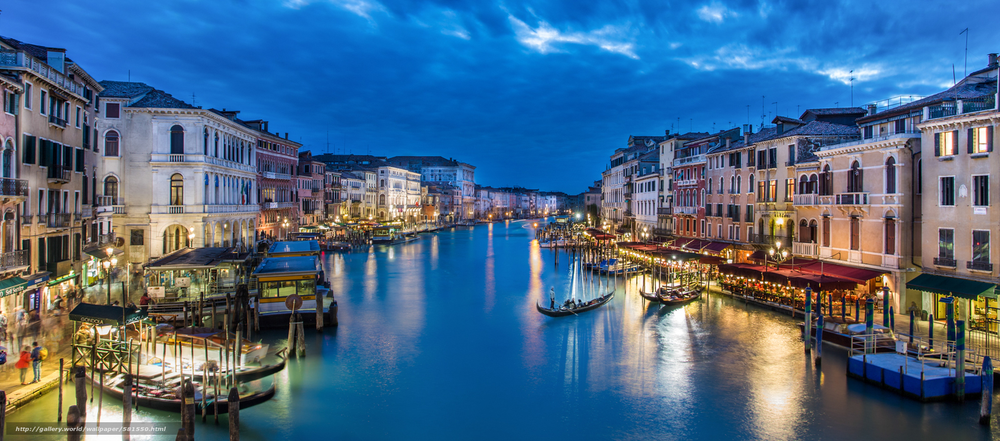
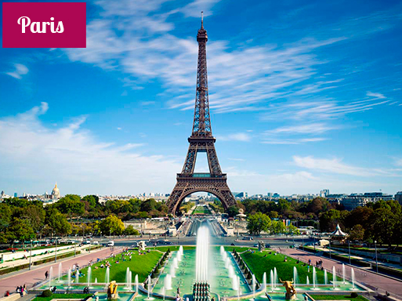
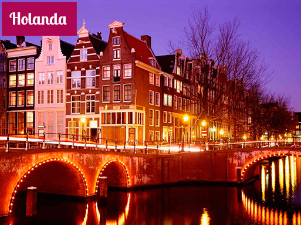
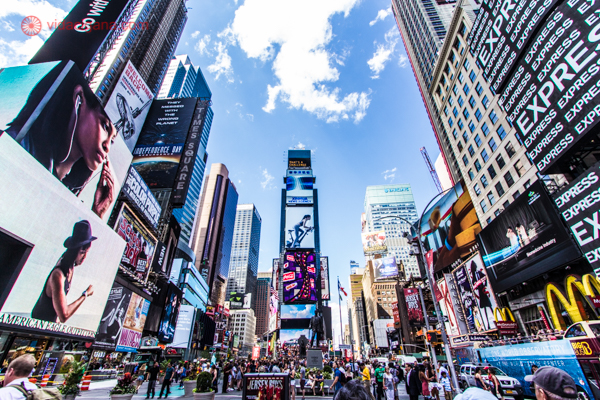

>>Destinos Internaionais

Paris
Ah, mon Paris! Ela atravessa décadas, séculos, encantando seus visitantes.
E não só os marinheiros de primeira viagem, mas também aqueles que desde a primeira vez caíram
de amores pela baguete, pelo queijo, pelo vinho, pelos passeios ao longo do Sena,
pela beleza da arquitetura e pela arte de viver dos parisienses.
A cidade luz – Dicas para conhecer Paris
Paris é a capital da França, palco de revoluções, seja a Francesa ou o Maio de 68,
berço da indústria da moda, musa literária, entre tantos outros atributos,
que atraem mais de 30 milhões de turistas todos os anos. O que deixa os parisienses
um pouco impacientes, e também orgulhosos – eles se esforçam para esconder, mas não conseguem.

Holanda
A Holanda não é um país muito simples de entender assim, olhando de primeira.
Tem hora que parece que os holandeses fazem certas coisas só pra trolar estrangeiro e
expatriado, que se esfalfa pra dissecar diversas camadas de holandesices e extrair
sentindo delas.
Seu nome oficial é Países Baixos.
A origem disso eu expliquei já, mas resumidamente a região tinha diversos paisículos,
dos quais o mais famoso se chamava Holanda. A certa altura, esses países se juntaram
num único País Baixo. Nesse caso, o país Holanda acabou se dividindo em duas províncias
dentro do novo País Baixo.

Estados Unidos
são uma república constitucional federal composta por 50 estados e um distrito federal.
A maior parte do país situa-se na região central da América do Norte, formada por 48 estados e Washington, D.C.,
o distrito federal da capital. Banhado pelos oceanos Pacífico e Atlântico, faz fronteira com o Canadá ao norte e
como México ao sul. O estado do Alasca está no noroeste do continente, fazendo fronteira com o Canadá no leste e
com a Rússia a oeste, através do estreito de Bering. O estado do Havaí é um arquipélago no Pacífico Central. O
país também possui vários outros territórios no Caribe e no Oceano Pacífico. Com 9,37 milhões de km² de área e
uma população de mais de 300 milhões de habitantes, o país é o quarto maior em área total, o quinto maior em área
contígua e o terceiro em população. Os Estados Unidos são uma das nações mais multiculturais e etnicamente diversas
do mundo, produto da forte imigração vinda de muitos países.[12] Sua geografia e sistemas climáticos também são
extremamente diversificados, com desertos, planícies, florestas e montanhas que abrigam uma grande variedade de espécies.
Um País Desenvolvido
Os Estados Unidos são um país desenvolvido e formam a maior economia nacional do mundo,
com um produto interno bruto que em 2012 foi de 15,6 trilhões * de dólares, equivalente
a 19% do PIB mundial por paridade do poder de compra (PPC) de 2011.[16][nota 2] Sua
renda per capita era a sexta maior do mundo em 2010, no entanto o país é o mais desigual
dos membros da Organização para a Cooperação e Desenvolvimento Econômico (OCDE), conforme
calculado pelo Banco Mundial.[17] Sua economia é alimentada pela abundância de recursos
naturais, por uma infraestrutura bem desenvolvida e pela alta produtividade; e, apesar de
ser considerado uma economia pós-industrial, o país continua a ser um dos maiores fabricantes
do mundo.[18] Os Estados Unidos respondem por 39% dos gastos militares do planeta[19] e
são um forte líder econômico, político e cultural.